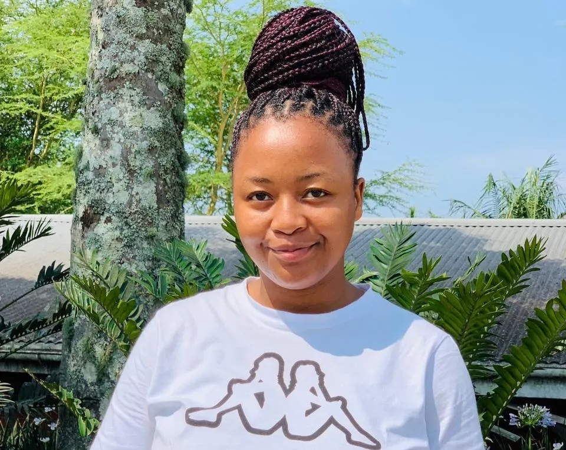

Contact Me
Email: nomsamchunu82@gmail.com
Cellphone Number: +27732628656

Front-End Developer
I am a third-year student currently pursuing a Bachelor's Degree in Information and Communication Technology at Durban University of Technology, driven by passing for technology and innovation. As a tech enthusiastic, I am constantly seeking new opportunities to grow my skills and knowledge. I am proud to be a member of Enactus DUT, where I engage in entrepreneurial initiatives aimed at making a positive impact in our community. Additionally, I am the member of The Men Carve DUT that aims to address and combat to issues related to gender-based violence through creative and innovative means. I am committed to learning and collaboration, and making a meaningful contribution to the tech world.
Email: nomsamchunu82@gmail.com
Cellphone Number: +27732628656